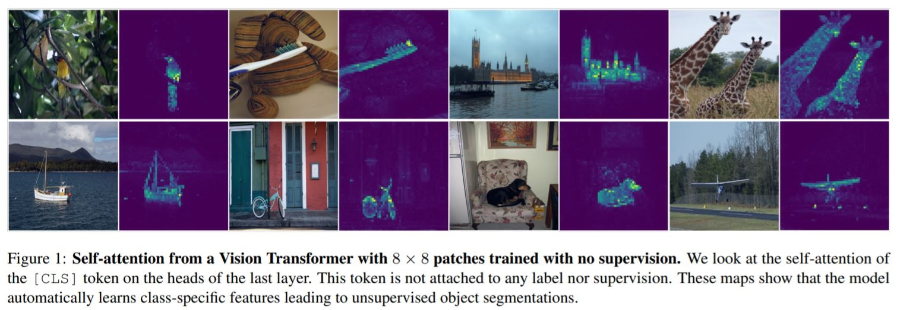
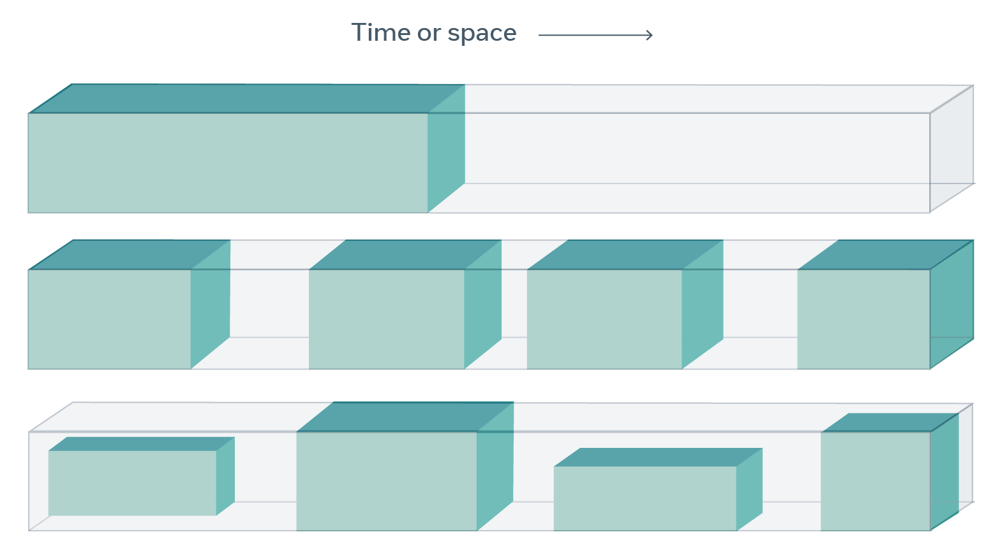
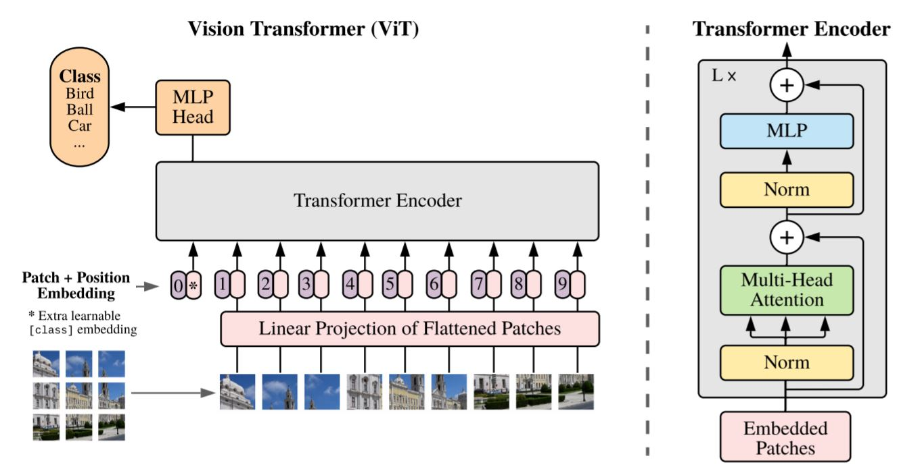
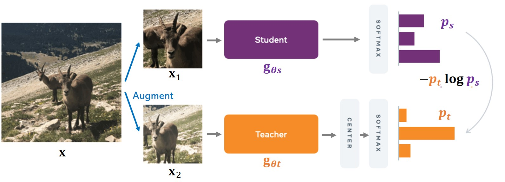
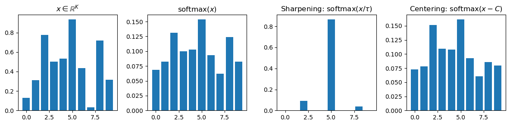
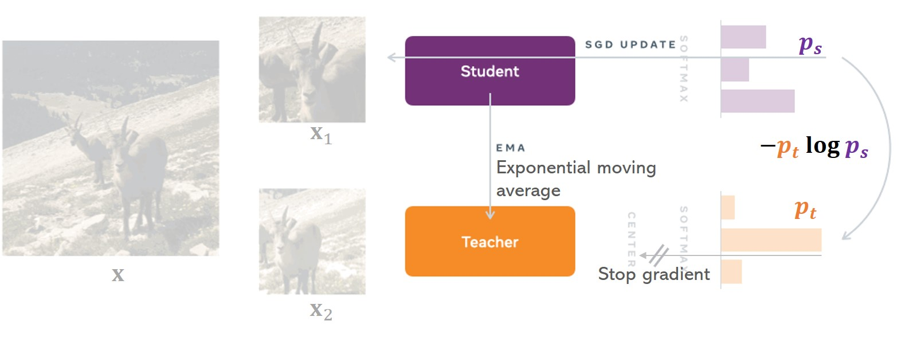
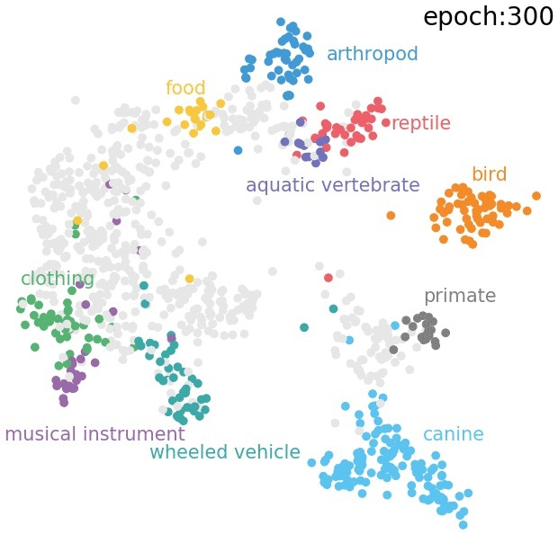
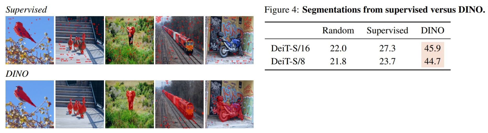
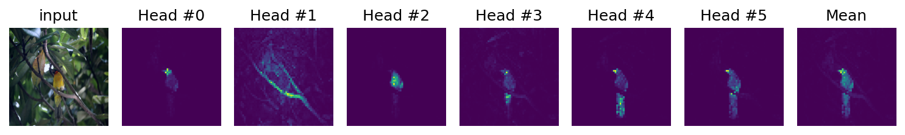

【論文まとめ】DINO: Emerging Properties in Self-Supervised Vision Transformers


本記事ではFacebook AI Researchの研究者らによって提案されたDINOという，画像モデルにおける自己教師あり学習の解説を行います．
Caron, Mathilde, Hugo Touvron, Ishan Misra, Hervé Jégou, Julien Mairal, Piotr Bojanowski, and Armand Joulin. 2021. “Emerging Properties in Self-Supervised Vision Transformers.” arXiv [cs.CV]. http://arxiv.org/abs/2104.14294.
(cf.) Facebook ブログ, GitHub, Yannic Kilcher氏の解説動画
要点：画像モデル (e.g. ResNet, Vision transformers)における，ラベル無しの自己教師あり学習の新しい手法DINOを考案したよ．ImageNetの画像をDINOで学習されたモデルを用いて特徴空間に埋め込むと，物体の種類ごとにクラスターが生まれ，線形回帰あるいはkNNを適応するだけで教師あり学習に匹敵する精度の物体認識ができたよ．特に画像モデルにVision Transformersを用いたとき，各headのself-attention mapは物体を識別し，segmentationのようなことができていたよ （下図参照: Caron et al., 2021; Fig.1）．

背景
Self-supervised learning
自己教師あり学習 (Self-supervised learning; SSL) は機械学習モデルの訓練方法の一種です．自己教師あり学習では，欠損のないデータを用意し，データの一部分（欠損したデータ）だけをモデルに入力し，残りのデータを予測するようにモデルを訓練します．下図は自己教師あり学習の概念図です (Self-supervised learning: The dark matter of intelligenceから引用)．

データ全体を大きな直方体に見立てたとき，入力されるデータは緑色の部分，予測するデータは残りの灰色の部分となります．自己教師あり学習の例として，言語モデルではある単語から周囲の単語を予測するSkip-gramや，文中の隠された単語を残りの単語から予測するCBOWやBERT (Devlin et al., 2018) などがあります (CBOWとBERTに差異はありますが割愛します)．画像モデルでは，画像の一部を塗りつぶして残りの部分から塗りつぶされた部分を予測するInpainting (e.g. DeepFill; Yu et al., CVPR. 2018; Yu et al., CVPR. 2019)や，現在のフレームから未来のフレームを予測する動画予測 (e.g. PredNet; Lotter et al., ICLR. 2017)などがあります．計算論的神経科学における視覚モデルとしても，こうした自己教師あり学習/教師なし学習のモデルは生物学的妥当性 (biologically plausible)があるとされて研究が進められています (Zhuang et al., PNAS. 2021)．
この記事で紹介するDINOは自己教師あり表現学習 (Self-supervised representation learning) の一種と言えます．自己教師あり表現学習には多数の研究がありますが，2つの系統について説明します．まず，対照学習 (contrastive learning) を用いた手法としては，MoCo (He et al., 2019), SimCLR (Chen et al., 2020)などが代表的です．対照学習を用いた手法では，元画像とそれをaugmentした画像 (positive sample)，関係ない画像 (negative sample)の3つの画像を入力し，元画像とpositive sampleとの表現の類似度が小さく，negative sampleとの表現の類似度が大きくなるように学習を進めます．次に，2020年後半頃より，非対称的な2つのネットワークを用いる手法が複数考案されてきました．BYOL (Grill et al., 2020), SimSiam (Chen & He, 2020), Barlow Twins (Zbontar et al., 2021) などが該当します．これらの手法ではaugmentationを用いた非対称的な入力と，stop-gradientを用いた非対称的な重み更新による2つの非対称性を生み出し，2つのネットワークの出力の類似度を小さくするように学習を行います．この記事で紹介するDINOはBYOLに似た手法ですが，以下の3つが異なります．
- BYOLとは異なる類似度損失を用いている．
- 2つのネットワークが同じモデル構造をしている．
- 手法をVision Transformerにも適応している．
Vision Transformers
Vision Transformer (ViT） は言語モデルにおいてRNNを置き換えるモジュールとして考案されたTransformerを画像モデルに適応したモデルのことです (Dosovitskiy et al., ICLR. 2021)．医学系の方は，ViTはビタミンの略称でないことに注意しましょう．
ViTでは，入力画像をパッチに分割（基本的に16×16のような格子状に分割）し，画像パッチをベクトルに埋め込んだ後，Transformerのencoderに入力するという操作をします（下図参照: Dosovitskiy et al., 2021; Fig.1）．

この記事ではViTに関して詳しい解説はしませんが，以下の資料が参考になります．
DINO : self-distillation with no labels
モデル構造
Caronらが提案するDINO (self-distillation with no labels) とは「ラベル無しでの自己蒸留」を意味します．ここでの蒸留 (distillation) とは，枝刈り (pruning) や量子化 (quantization)に並ぶニューラルネットワークのモデル圧縮手法です．通常の蒸留では，ラベル付きデータセットとパラメータ数が多いモデル（教師モデル; teacher model）を用意し，ラベルと教師モデルの出力を教師信号 (hard & soft target) としてパラメータ数が少ないモデル（生徒モデル; student model）を訓練します (Hinton, Vinyals & Dean, NIPS, 2014)．データセットだけでscratchから生徒モデルを訓練するより，教師モデルを用いた方が生徒モデルの性能は高くなるということが知られています．
DINOは教師モデルと生徒モデルを用いるところは通常の蒸留と同じですが，ラベル付きデータは用いず，教師モデルは生徒モデルから作られるという違いがあります．このことを念頭に置いて，モデルの構造を見てみましょう．以下はモデルの概略図です（Facebook ブログより引用および改変）．生徒モデルを\(g _ {\theta s}\)，教師モデルを \(g _ {\theta t}\)とし，入力画像を \(\mathbf{x}\)とします．

論文中には次のようなPytorch-likeな擬似コードが掲載されています (Caron et al., 2021; Algorithm 1)．以下ではこの擬似コードを用いながら解説を行います．
# gs, gt: student and teacher networks
# C: center (K)
# tps, tpt: student and teacher temperatures
# l, m: network and center momentum rates
gt.params = gs.params
for x in loader: # load a minibatch x with n samples
x1, x2 = augment(x), augment(x) # random views
s1, s2 = gs(x1), gs(x2) # student output n-by-K
t1, t2 = gt(x1), gt(x2) # teacher output n-by-K
loss = H(t1, s2)/2 + H(t2, s1)/2
loss.backward() # back-propagate
# student, teacher and center updates
update(gs) # SGD
gt.params = l*gt.params + (1-l)*gs.params
C = m*C + (1-m)*cat([t1, t2]).mean(dim=0)
def H(t, s):
t = t.detach() # stop gradient
s = softmax(s / tps, dim=1)
t = softmax((t - C) / tpt, dim=1) # center + sharpen
return - (t * log(s)).sum(dim=1).mean()
Augmentation
各モデルに対して\(\mathbf{x}\)はそのまま入力せず，画像 \(\mathbf{x}\) を切り出す(crop)ようなaugmentationした画像を入力します．切り出し方は，入力画像 \(\mathbf{x}\)から2つのglobal 画像 \(x_1^g, x_2^g\)，および複数のlocal画像 \(x_j^\ell\ (\ell = 1, 2, \ldots)\)を生成するようにします．Global画像とlocal画像は切り出す範囲（解像度）が異なり，例えばglobal画像は元画像の50%以上，local画像は元画像の50%未満などとします．ここで，生徒モデルには集合 \(V\)の全ての要素，すなわちglobal画像とlocal画像の両方を入力しますが，教師モデルにはglobal画像 \(x_1^g, x_2^g\) のみを入力します．こうすることで，localからglobal (local-to-global)への対応関係が生み出されると，Caronらは述べています．
擬似コードで対応する部分は以下のようになっています．この擬似コードでは両方のモデルにx1, x2を入力しているので，x1, x2はglobal画像であると思われます（誤解している可能性があります）．
for x in loader: # load a minibatch x with n samples
x1, x2 = augment(x), augment(x) # random views
s1, s2 = gs(x1), gs(x2) # student output n-by-K
t1, t2 = gt(x1), gt(x2) # teacher output n-by-K
Sharpeningとcentering
モデルの出力にはsharpeningとcenteringの2つの操作を行います．生徒モデルにはsharpeningのみ，教師モデルには両方の操作を適応します．2つの操作はモデルの崩壊を避けるため，特にsharpeningは出力の一様分布化，centeringは出力が1つだけ高い値を取り続けるといった状況を避けるために適応されます．
まず，sharpeningは通常使われるSoftmax関数を修正することで実装されます．
ここで\(\tau\)は温度のパラメータ（Softmaxの元となったカノニカル分布に由来する名称）であり，分布の鋭さ (sharpness)に影響します．DINOでは生徒，教師モデルで異なる温度パラメータ \(\tau_{s}, \tau_{t}\)をそれぞれ用います．なお，\(\tau>1\)の場合，分布はむしろ緩やかになるので，\(0<\tau<1\)の値が用いられます．
次に，centeringは教師モデルの出力から\(C\)を除算することで出力の分布を平均に近づける操作です．ここで\(C\)はスカラーではなく，出力と同じサイズのベクトルであることに注意してください（softmaxの入力からスカラーを除算しても同じ値しか出力されません）．\(C\)はゼロベクトルで初期化され，次のように\(g_{\theta_{t}}\)の出力の指数移動平均で更新されます．
なお，\(B\)はバッチサイズです．擬似コードでは次のように実装されます．
C = m*C + (1-m)*cat([t1, t2]).mean(dim=0)
s = softmax(s / tps, dim=1)
t = softmax((t - C) / tpt, dim=1) # center + sharpen
それぞれの効果は次のようになります．

上図を描画するPythonコードは以下の通りです．
import numpy as np
import matplotlib.pyplot as plt
def softmax(x):
ex = np.exp(x - np.max(x))
return ex / np.sum(ex)
K, B, tau = 10, 5, 0.07 # output dims, batch size, temp param
x, C = np.random.rand(K), np.mean(np.random.rand(5, K), axis=0) # input, center
pos = range(K) # for bar plot
plt.figure(figsize=(12, 3), dpi=100)
plt.subplot(1,4,1); plt.bar(pos, x); plt.title(r"$x \in \mathbb{R}^K$")
plt.subplot(1,4,2); plt.bar(pos, softmax(x)); plt.title("softmax"+r"$(x)$")
plt.subplot(1,4,3); plt.bar(pos, softmax(x/tau)); plt.title("Sharpening: softmax"+r"$(x/\tau)$")
plt.subplot(1,4,4); plt.bar(pos, softmax(x-C)); plt.title("Centering: softmax"+r"$(x-C)$")
plt.tight_layout()
損失関数とパラメータの更新
以下は損失関数の計算とパラメータの更新の概略図です（Facebook ブログより引用および改変）．

まず，生徒モデルの出力 \(P_s\)と教師モデルの出力 \(P_t\)を用い，損失関数 \(H(P_s, P_t):=-P_t\log P_s\)を計算します．次に損失関数を最小化するように生徒モデルのパラメータ \(\theta_s\) をbackpropで更新します．なお，損失関数および生徒モデルの最適化問題は，Augmentationの節で述べたglobal画像\(x_1^g, x_2^g\)とlocal画像\(x_j^\ell\ (\ell = 1, 2, \ldots)\)，および切り出した画像全ての集合 \(V = \left\{x_1^g, x_2^g, x_j^\ell\right\} \ (\ell = 1, 2, \ldots)\) を用いると次のように表されます．
一方，教師モデルのパラメータ \(\theta_t\) は\(\theta_s\) を指数移動平均 (exponential moving average; EMA) することにより生成されます．
なお，\(\theta_t\)の初期値は\(\theta_s\)とします．これに対応する擬似コードは以下の部分です．
loss = H(t1, s2)/2 + H(t2, s1)/2
loss.backward() # back-propagate
update(gs) # SGD
gt.params = l*gt.params + (1-l)*gs.params
学習後のDINOモデルの特徴
学習後のDINOモデルの特徴としては，次の2点があります．
- ImageNetの画像をDINOで学習されたモデルを用いて特徴空間に埋め込むと，物体の種類ごとにクラスターが生まれ，線形変換あるいはkNNを適応するだけで教師あり学習に匹敵する精度の物体認識ができた．
- 画像モデルにViTを用いたとき，各headのself-attention mapは物体を識別し，segmentationのようなことができた．
1番目の特徴ですが，ImageNetの画像を特徴空間に埋め込んだときの結果は次図のようになります（Facebook ブログより引用）．

物体の種類ごとにクラスター化していることがわかります．この結果を線形回帰 (linear regression)あるいはkNNで分類すると，全てのパラメータを教師あり学習で最適化したモデルに匹敵する分類精度が得られました（論文中Table2参照）．
2番目の特徴ですが，画像モデルにViTを用いた場合，画像中最も注目される物体（視覚系の用語で言うところのcore object）上にself-attentionがかかっており，segmentationのようなことができていたということです（本記事最上部の画像参照）．特に，教師あり学習を行ったViTモデルのself-attention mapと比較すると，DINOで学習したモデルの方がより物体を捉えることができていました（下図参照: Caron et al., 2021; Fig.4）．

Self-attentionを可視化するColab notebook
今回，DINOのGitHubリポジトリのvisualize_attention.pyコードを元に，Self-attentionを可視化するnotebookを作成しました：Colab notebook link
実行結果は次図のようになります．

一番左が入力画像（よく見ると中央に鳥がいます），中央が各headのself-attention map，一番右がself-attention mapの平均値となっています．ヒト（少なくとも私）でも鳥がいるか見分けづらいにも関わらず，その形状を捉えられていることが分かります．
DINOが学習可能である理由についての仮説
DINOを含め，自己教師あり表現学習が可能である理由について，Yannic Kilcher氏の解説動画中で「AugmentationとDatasetが帰納バイアスになっている」という仮説が述べられていました．
- Augmentationについて：色調や明度，切り出す位置のズレなどは物体を認識する際に影響しないという情報を与えている．
- Datasetについて：写真を取るときは，自分が注目する物体を視野の中に入れる．道路の脇に草が少し生えているような画像はインターネット上に普通アップロードしない．特にImageNetはインターネット上から画像を集めているため，こうした写真で学習をさせることには暗に画像内に物体があるという情報を与えているといえる．
また，本会のOB会員である秋山さん (@osciiart) がツイッター上で以下のような指摘をされていました．
no labelで学習しましたっていうけどよ…ImageNetはlabelを使わなかったとしても暗にcategoricalなcluster構造をもったdatasetじゃねえのかよ。
— OsciiArt◆SPNEXTcRxQ (@osciiart) May 3, 2021
これに関して否定はできず，例えばヘッドマウントカメラを付けて日常生活を送らせた動画フレームで学習すると，どのような結果になるのかというのは気になるところです．ただし，SAYCam (Sullivan et al., 2020) という生後6～32か月の乳児にヘッドマウントカメラを装着させた動画データセットに対し，自己教師あり学習を適応したという研究 (Orhan et al., NeurIPS. 2020) の結果を踏まえると，膨大な視覚入力を受けていればImageNetのような高品質なデータセットで学習しなくてもよいと考えられます．
自己教師あり学習の展望
この記事を書く上で自己教師あり学習の論文を複数読み，手法がよりシンプルかつ効果的なものになってきていることが分かりました．手法がシンプルというのには実装が楽になる，メモリを節約できるなどの利点があります．一方で，(Zhuang et al., PNAS. 2021) のように，自分は計算論的神経科学における視覚モデルという観点で自己教師あり学習に注目しています．このため，今後よりシンプルで生物学的妥当性の高い自己教師あり学習モデルが考案されるのではないかと期待をしています．
- 前の記事 : 令和2年度自主研究奨励事業『眼底画像から緑内障か否か判断する深層学習モデル開発』
- 次の記事 : 甲状腺細胞診分類モデル＠日本臨床細胞学会
- 関連記事 :